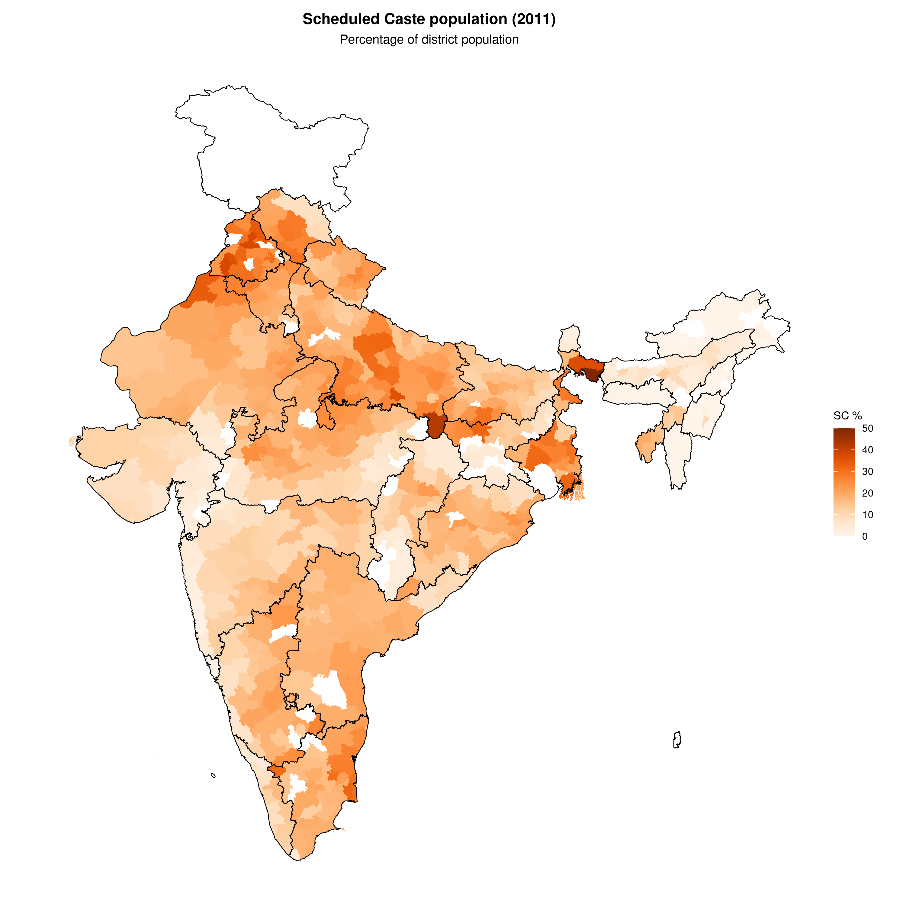
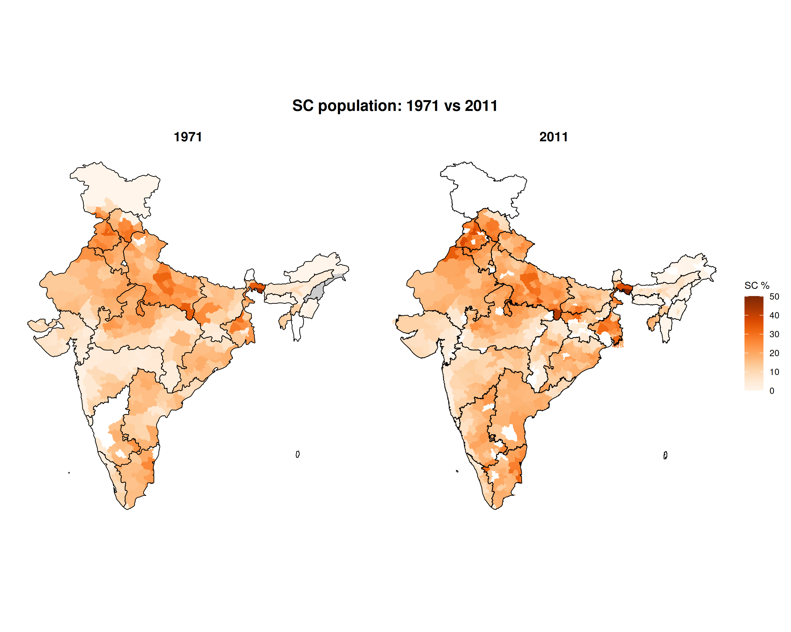
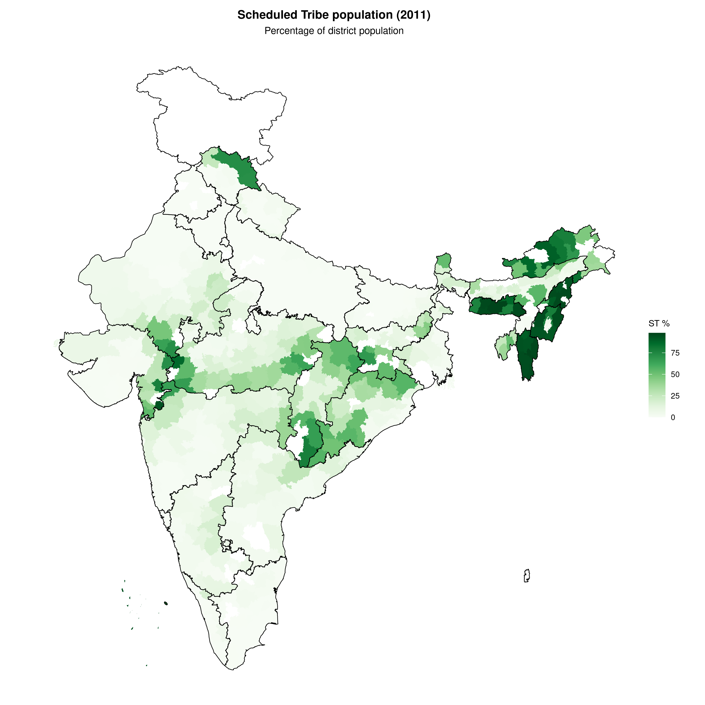
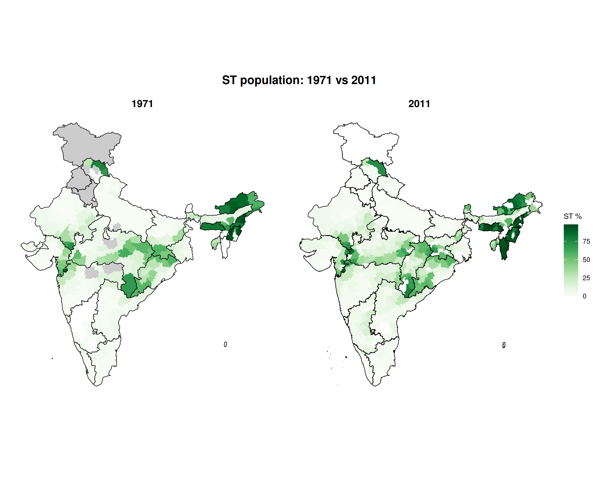
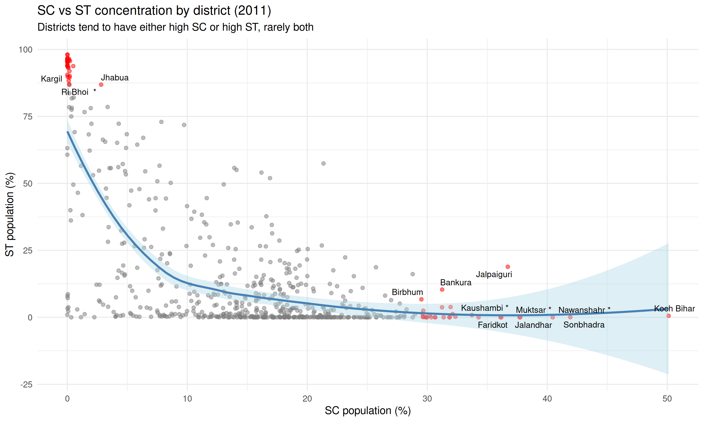

Scheduled Castes (SC) and Scheduled Tribes (ST) are constitutionally recognized groups in India. Their geographic distribution reflects historical settlement patterns and regional diversity.
sc_st_2011 <- census_2011_pca |>
mutate(
sc_pct = 100 * sc_population / population_total,
st_pct = 100 * st_population / population_total
) |>
attach_geometry(year = 2011, geography = "district")
sc_st_1971 <- census_1971 |>
filter(geography == "district") |>
mutate(
sc_pct = 100 * sc_population_total / population_total,
st_pct = 100 * st_population_total / population_total
) |>
attach_geometry(year = 1971, geography = "district")Scheduled Caste population
SC: 2011
plot_map(
sc_st_2011,
fill_var = "sc_pct",
title = "Scheduled Caste population (2011)",
subtitle = "Percentage of district population",
legend_title = "SC %",
palette = "oranges",
show_state_boundaries = TRUE
)
SC: 1971 vs 2011
compare_maps(
list(
"1971" = sc_st_1971,
"2011" = sc_st_2011
),
fill_var = "sc_pct",
title = "SC population: 1971 vs 2011",
legend_title = "SC %",
palette = "oranges"
)
Scheduled Tribe population
ST: 2011
plot_map(
sc_st_2011,
fill_var = "st_pct",
title = "Scheduled Tribe population (2011)",
subtitle = "Percentage of district population",
legend_title = "ST %",
palette = "greens",
show_state_boundaries = TRUE
)
ST: 1971 vs 2011
compare_maps(
list(
"1971" = sc_st_1971,
"2011" = sc_st_2011
),
fill_var = "st_pct",
title = "ST population: 1971 vs 2011",
legend_title = "ST %",
palette = "greens"
)
State-level summary (2011)
state_summary <- census_2011_pca |>
group_by(state_name_harmonized) |>
summarise(
population = sum(population_total),
sc_population = sum(sc_population),
st_population = sum(st_population)
) |>
mutate(
sc_pct = round(100 * sc_population / population, 1),
st_pct = round(100 * st_population / population, 1)
) |>
arrange(desc(sc_pct + st_pct))
cat("States with highest SC population %:\n")
#> States with highest SC population %:
state_summary |>
arrange(desc(sc_pct)) |>
select(state_name_harmonized, sc_pct) |>
head(5)
#> # A tibble: 5 × 2
#> state_name_harmonized sc_pct
#> <chr> <dbl>
#> 1 Punjab 28.9
#> 2 Himachal Pradesh 24.7
#> 3 West Bengal 23
#> 4 Uttar Pradesh 21.1
#> 5 Haryana 19.3
cat("\nStates with highest ST population %:\n")
#>
#> States with highest ST population %:
state_summary |>
arrange(desc(st_pct)) |>
select(state_name_harmonized, st_pct) |>
head(5)
#> # A tibble: 5 × 2
#> state_name_harmonized st_pct
#> <chr> <dbl>
#> 1 Lakshadweep 94.5
#> 2 Mizoram 94.5
#> 3 Nagaland 89.1
#> 4 Meghalaya 85.9
#> 5 Arunachal Pradesh 64.2SC vs ST scatter plot
scatter_data <- sf::st_drop_geometry(sc_st_2011) |>
mutate(
is_extreme = sc_pct > quantile(sc_pct, 0.95, na.rm = TRUE) |
st_pct > quantile(st_pct, 0.95, na.rm = TRUE),
label = ifelse(is_extreme, name, NA)
)
ggplot(scatter_data, aes(sc_pct, st_pct)) +
geom_point(aes(color = is_extreme), alpha = 0.5) +
geom_smooth(method = "loess", se = TRUE, color = "steelblue", fill = "lightblue") +
geom_text_repel(
aes(label = label),
size = 3,
max.overlaps = 15,
na.rm = TRUE
) +
scale_color_manual(values = c("grey50", "red"), guide = "none") +
coord_fixed(ratio = 1) +
labs(
x = "SC population (%)",
y = "ST population (%)",
title = "SC vs ST concentration by district (2011)",
subtitle = "Districts tend to have either high SC or high ST, rarely both"
) +
theme_minimal()